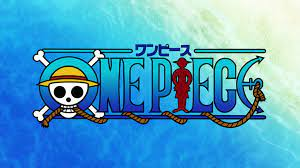
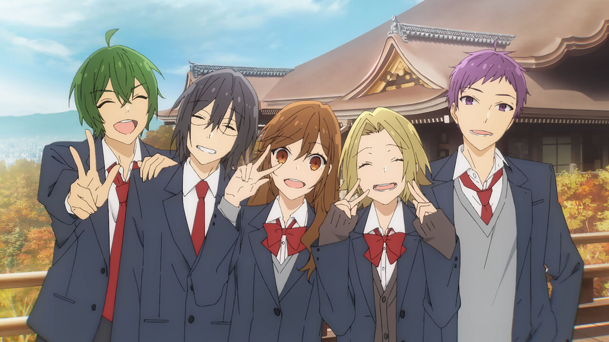

My Anime Recommendations
So Firstly, I'll Start By Telling About My Taste in Movies.I'm a big fan of fast paced movies. As far as the genre, I am fine with any genre as long as the plot is good ! Down Below is a list of anime that is catered to my taste along with the top three characters from each list
- One Piece - It Is the Story Of A Pirate Who seeks freedom in a world where an organizations tries to supress the people.
- Luffy - The Main Protaganist who has the power of a mysterious fruit and seeks freedom
- Zoro - The Right Hand Man Of Luffy
- Robin - Robin is a smart woman, friends with luffy and constantly thrives to acquire knowledge
- 
- Horimiya - It is an anime where a high school end up in love and their fun adventures through high school along with their fiends
- Hori - The Female Lead of the series
- Miyamura - The Male Lead of the Series
- 
- Suzume - A Fictional Movie in which a girl encounters a cut which holds the key to a mysterious world lying underneath the normal world She Leaves, It involves her encounters with many people and ends up falling in love with a researcher who seeks the truth of the other world